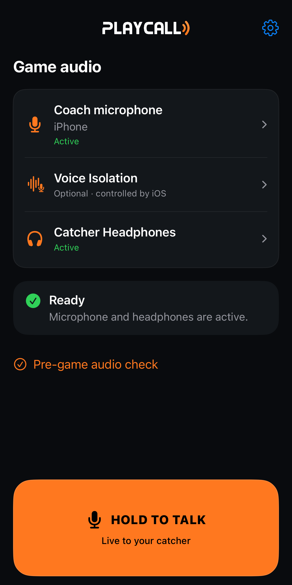
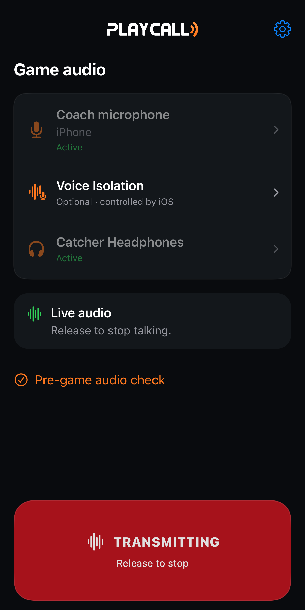
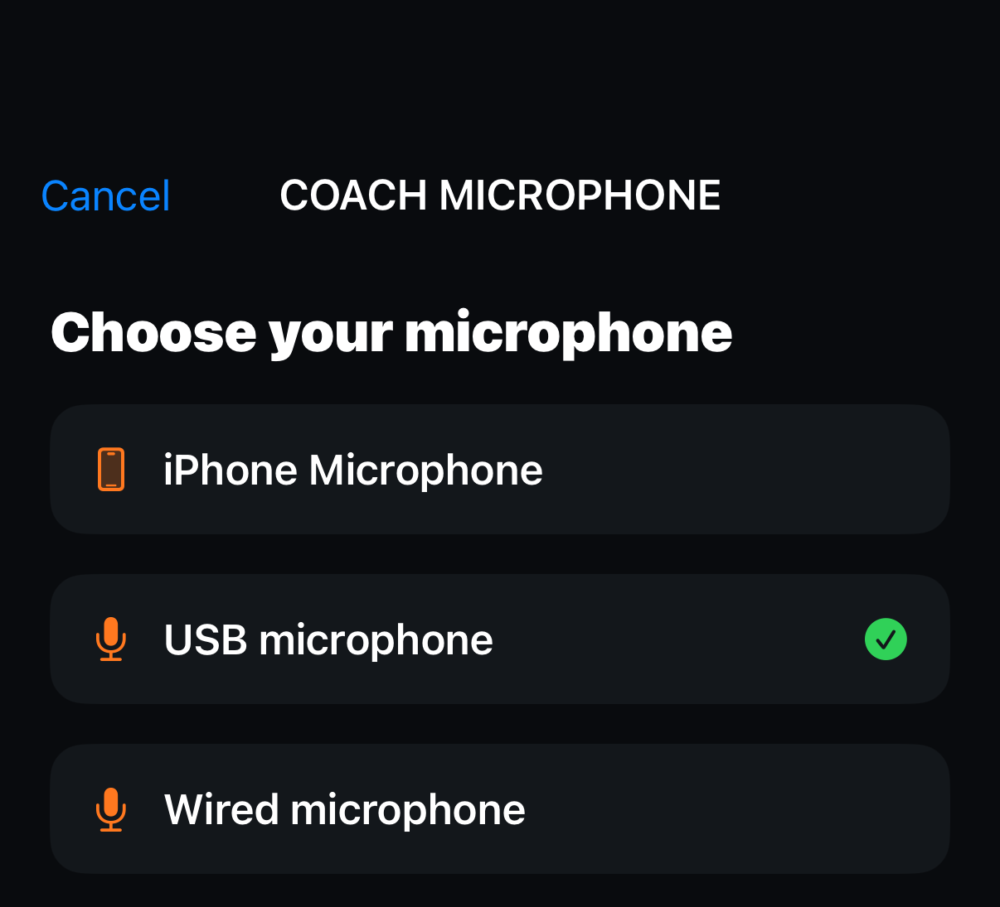
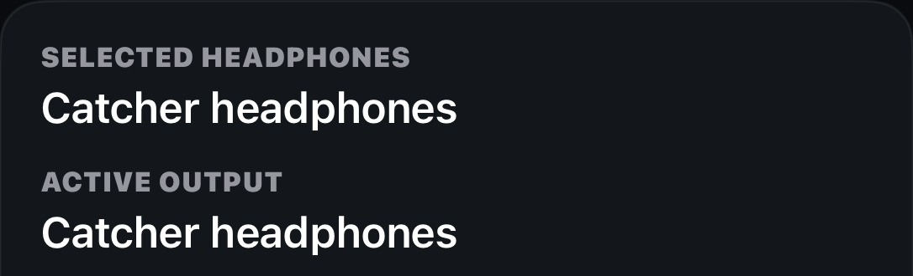
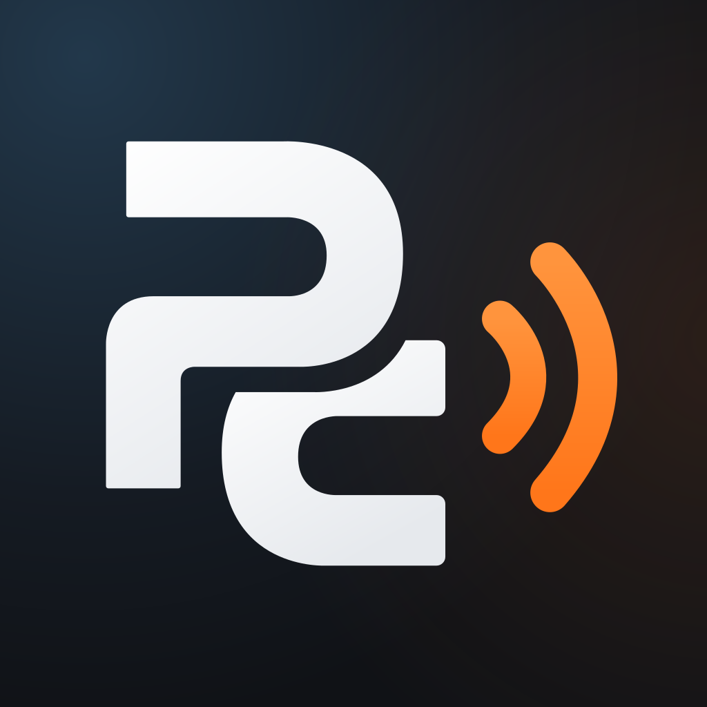

Coming to iPhone
Your game.
Your calls.
Live coach-to-catcher communication,
built for a simpler game day.
One iPhone with the coach. A compatible microphone. Bluetooth headphones with the catcher. Hold to talk.
Be ready for the first call.
Join the waitlist for launch announcements and relevant beta-testing opportunities.
Load the email form to connect to MailerLite and Google reCAPTCHA. Their form and anti-spam processing apply.
No guaranteed beta access. No required PlayCall account.

The game-day routine
Set up. Check in.
Call the pitch.
The iPhone stays with the coach. The audio goes to your catcher.
- 01
Connect your microphone.
Choose the iPhone mic or a compatible wired, USB or wireless USB-receiver microphone.
- 02
Connect your catcher.
Pair compatible Bluetooth headphones and verify the selected output in PlayCall.
- 03
Hold. Talk. Release.
Check sound with your catcher before the game. Hold to send your call; release to stop.
Inside PlayCall
A clear view.
A deliberate press.
Your routes, your microphone and your talk control, right where you need them.
Connected & ready
See the active microphone and catcher output.
While you hold
The real transmitting state. Release to stop.

Choose your input
Review supported microphones.

Know your output
Compare your saved pair with the active route.

Native app previews use representative device connections. They do not demonstrate a physical connection or field test. Actual compatibility depends on your iPhone, iOS and equipment.
Purpose-built for baseball
Keep the focus
on your next call.

- A simple setup routine
- A guided setup and optional pre-game audio check help you verify your devices with your catcher.
- Live audio, one direction
- Your voice travels from the coach’s microphone to one catcher’s headphones.
- Choose compatible equipment
- Use eligible Bluetooth headphones and a supported microphone. AirPods are not required.
- No ongoing subscription
- A planned one-time unlock, with no required PlayCall account.
Planned launch pricing
Try it first.
Unlock it once.
Free App Store download when available.
A 14-day full-featured trial.
No recurring subscription.
$24.99 USD
One-time permanent unlock
Planned pricing. Production App Store products are not yet configured. Final local pricing and availability will appear in the App Store.
Before the first pitch
Good questions.
Clear answers.
What is PlayCall?
PlayCall is an upcoming native iPhone app for one-way live coach-to-catcher audio. Connect your equipment, verify your routes and hold the talk control to send your voice.
Which headphones work?
PlayCall uses compatible Bluetooth headphone outputs that iOS exposes and the app can verify. Not every accessory or microphone/output combination is supported. Test your exact equipment with your catcher before a game.
Do I need AirPods?
No. AirPods are not required. Other compatible Bluetooth headphones may work. A successful connection does not establish competition equipment approval.
Can I use a wireless microphone?
A compatible wireless lavalier with a receiver that iOS exposes as a supported USB input is an option. PlayCall also supports eligible wired/USB inputs and the iPhone microphone. Bluetooth coach microphones are not supported for this LIVE setup. Verify the actual input and catcher output together.
Does PlayCall require two phones?
No. The iPhone stays with the coach and sends live audio to the catcher’s connected Bluetooth headphones. PlayCall is designed for one receiving catcher.
Is there a monthly subscription?
No. The planned model is a free download, a 14-day full-featured trial, and a $24.99 USD one-time permanent unlock. Final App Store pricing is still being configured.
When will PlayCall be available?
PlayCall is preparing for TestFlight and eventual App Store distribution. There is no announced public release date. The waitlist is for launch news and relevant beta opportunities, not guaranteed beta access.
Is PlayCall allowed in my league?
Rules vary by governing body, season, age division and tournament. Confirm communication rules and the exact equipment with your officials before use. PlayCall does not provide official rules approval. Read the equipment guidance.
Your next pitch starts here
Make the first call
when PlayCall is ready.
Join the waitlist Launch announcements. Relevant beta opportunities.
Unsubscribe at any time.